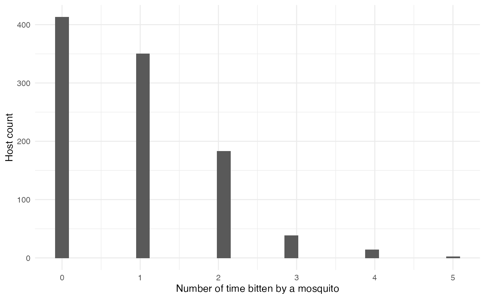
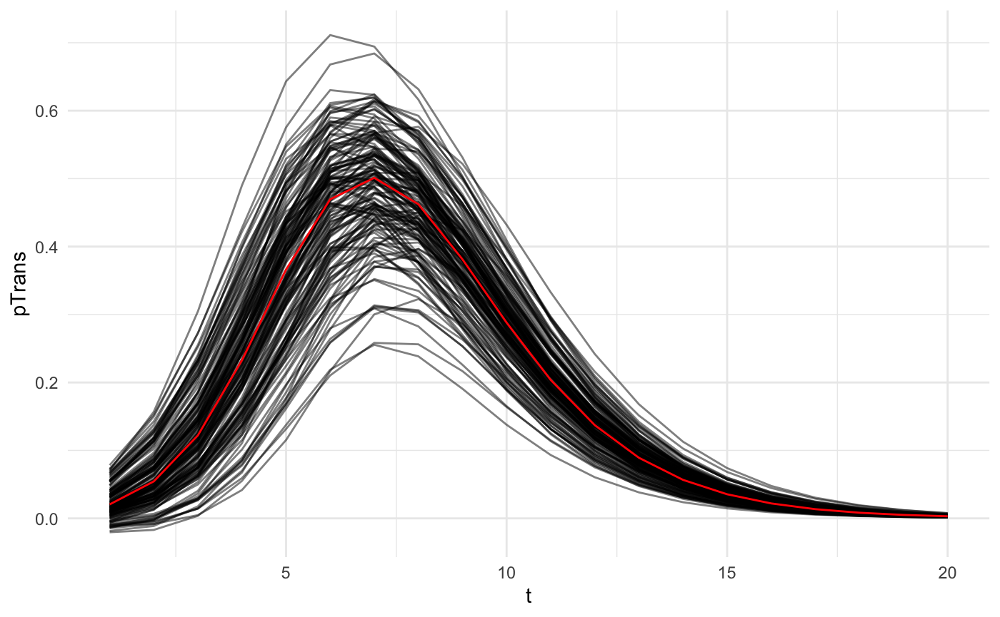
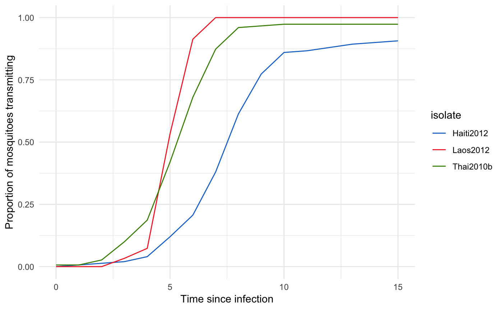
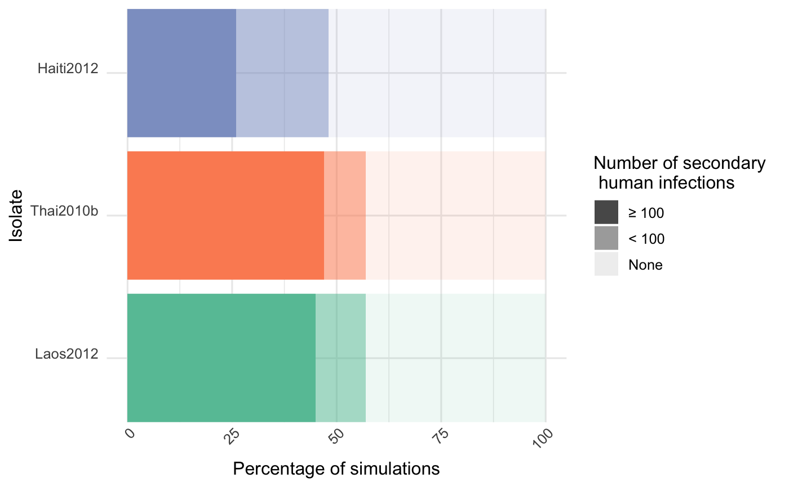

Epidemiological impact of mosquito vector competence variation
Sebastian Lequime
2020-04-03
Source:vignettes/examples/vector-competence.Rmd
vector-competence.RmdIntroduction
Vector competence (VC) defines the intrinsic ability of a vector to carry and transmit a pathogen. VC is usually scored experimentally as the prevalence of infected and infectious vectors at given times post-pathogen exposure. Each year, numerous experimental studies aim to evaluate VC for various arthropod species or populations for vector-borne pathogens, which ultimately aims to understand epidemiology and assess local risk of transmission for potentially introduced vector-borne pathogens. These experimental data however usually remain purely descriptive and poorly reflect the dynamic nature of VC. nosoi can be used to easily translate such empirically observed within-host dynamics into their impact on an epidemic process through simulations, without the use of advanced mathematics. The epidemic process can be tailored to mimic known parameters of a particular place of interest, or can be “fixed” to allow easy comparison of one or several key variables.
This example aims to illustrate how to use nosoi to perform such a study. We will use data derived from the following published article:
A. Fontaine, S. Lequime, I. Moltini-Conclois, D. Jiolle, I. Leparc-Goffart, R. C. Reiner Jr. & L. Lambrechts (2018) Epidemiological significance of dengue virus genetic variation in mosquito infection dynamics. PLoS Pathog. 14(7): e1007187. Link
In this paper, Fontaine et al. explore the impact of variation of within-host dynamics of dengue virus 1 in Aedes aegypti mosquitoes on a simulated epidemic process. They compare, in the same population of Aedes aegypti from Thailand, the dynamics of 8 viral isolates. In the example here, we will compare three of these isolates, called Laos2012, Haiti2012 and Thai2010b using epidemic processes simulated using nosoi. Most of the parameters of this set of simulations will be derived from the Fontaine et al. paper, specifically supplementary table 1.
Setting up the simulation framework
We will restrict ourselves to a relatively simple simulation, as the idea is to compare three viral isolates under the same set of parameters except for the ones linked to vector competence in the mosquito. Time steps will be in days. This simulation obviously puts us in the case of a dual-host pathogen, but we will not use any spatial or population structure (for more details on this type of simulation, see the relevant tutorial). Hence, only 3 core functions of nosoi need to be parameterized for each host:
- the daily probability to exit the simulation (
pExit), either being cured of the disease for a human or dying for a mosquito. - the daily number of infectious contacts with different potential hosts (
nContact), which would be the number of times per day a human is bitten by a susceptible mosquito, or the number of times per day a mosquito is biting a different human. - the probability to transmit the virus once an infectious contact occurs (
pTrans). This will be dependent on the within-host dynamics in each host, and will be the place where vector competence will influence the epidemic process.
Host A: Humans
pExit
In Fontaine et al., humans do not die from the dengue infection, but exit the simulation when their transmission probability approaches 0 on its way down (see below). To approximate this behavior, we will use one of the parameters used in pTrans, called Md_human, which is the time since infection at which pTrans equals 50% of its maximum value. We will assume here that after three times this period, an infected human cannot transmit the virus any more and will thus exit the simulation:
nContact
This parameter was not determined in Fontaine et al., as unlike in nosoi, each mosquito in the simulation was simulated. Since the daily probability of a mosquito to bite is 0.3 and the relative density of mosquitoes compared to humans equaled 3, we can estimate that the daily probability to get bitten by a mosquito is approximately 0.9. Of course, this should correspond to a distribution of integer numbers (such as 0, 1, 2). We will therefore make draws from a Poisson distribution with rate parameter \(\lambda\) = 0.9.
## `stat_bin()` using `bins = 30`. Pick better value with `binwidth`. ### pTrans
Fontaine et al. model the transmission probability of a human to a mosquito using a 5-parameter equation based on two logistic functions, allowing the value of pTrans to go up in time, reach a plateau and then decrease over time:
p_Trans_fct_human <- function(t, K_human, Mg_human, Bg_human, Md_human, Bd_human) {
K_human*1/2*((1+tanh((t-Mg_human)/Bg_human))-(1+tanh((t-Md_human)/Bd_human)))
}Each parameter, except t (time since infection), corresponds to individually set parameters, mimicking heterogeneity among hosts:
-
\(K_{human}\) (
K_human), the maximum probability of transmission. -
\(M\gamma\) (
Mg_human), the time when 50% \(K_{human}\) is reached during the ascending phase. -
\(B\gamma\) (
Bg_human), the slope of the ascending curve. -
\(M\delta\) (
Md_human), the time when 50% \(K_{human}\) is reached during the descending phase. -
\(B\delta\) (
Bd_human), the slope of the descending curve.
#Dynamics of viremia in vertebrate (see EIP paper for justification)
K_human_fct <- function(x){rbeta(x,0.98,0.002)}
Mg_human_fct <- function(x){rnorm(x,4.844,0.5)}
Bg_human_fct <- function(x){rnorm(x,2.536,0.2)}
Md_human_fct <- function(x){rnorm(x,8.392,0.5)}
Bd_human_fct <- function(x){rnorm(x,4.038,0.2)}
param.pTrans_human <- list(K_human=K_human_fct, Mg_human=Mg_human_fct, Bg_human=Bg_human_fct, Md_human=Md_human_fct, Bd_human=Bd_human_fct) The profile over time since infection of 150 unique hosts will look like this (red is the mean value for each parameter): 
Host B: Mosquitoes
pExit
In Fontaine et al., the daily survival probability of a mosquito is 0.85, so its pExit equals 1-0.85:
nContact
In Fontaine et al., the daily biting probability of a mosquito is 0.3. We assume that if a mosquito bites, it bites only one human:
pTrans
In Fontaine et al., the probability of transmission from a mosquito to a human is approximated by the measure of dissemination, a proxy for the extrinsic incubation period (EIP). We will assume here that pTrans is defined in the form of a threshold function: before a certain amount of time since initial infection (EIP), the mosquito does not transmit (t_EIP), and after that time, it will transmit with a certain (constant) probability (which we will call p_max). This function will be dependent on the time since the mosquito’s infection t:
pTrans will of course vary according to the viral isolate studied. EIP was measured dynamically for each mosquito population over time as the proportion of mosquitoes with disseminated viral infections. This experimental measure, a mean of the whole population, is modeled as a logistic function characterized by three parameters:
-
\(K_{mosquito}\) (
K_mosquito), the maximum probability of transmission. -
\(M_{mosquito}\) (
M_mosquito), the time when 50% \(K_{mosquito}\) is reached during the ascending phase. -
\(B_{mosquito}\) (
B_mosquito), the slope of the ascending curve.

According to our initial hypothesis, these population curves are actually formed by a heterogeneous population of mosquitoes “switching” from infected to infectious, thus t_EIP is individually set and can be extracted from the logistic curve of the population, representing the probability distribution, and p_max is actually 1 for most of the mosquitoes, but can be 0 (some will never transmit despite being infected) for a few others:
#values will be drawn from a logistic distribution with location M and scale 1/B (see above)
p_max_fct_Laos <- function(x){rbinom(x,1, 1)}
t_EIP_Laos <- function(x){rlogis(x, location = 4.9, scale = 1/2.37)}
param_pTrans_mosquito_Laos <- list(p_max=p_max_fct_Laos,t_EIP=t_EIP_Laos)
p_max_fct_Haiti <- function(x){rbinom(x,1, 0.94)}
t_EIP_Haiti <- function(x){rlogis(x, location = 7.36, scale = 1/0.92)}
param_pTrans_mosquito_Haiti <- list(p_max=p_max_fct_Haiti,t_EIP=t_EIP_Haiti)
p_max_fct_Thai <- function(x){rbinom(x,1, 0.98)}
t_EIP_Thai <- function(x){rlogis(x, location = 5.15, scale = 1/1.24)}
param_pTrans_mosquito_Thai <- list(p_max=p_max_fct_Thai,t_EIP=t_EIP_Thai)Here is what this looks like for 150 mosquitoes with each isolate:

As we can see, this perfectly mimics the observed population pattern for each virus.
Running nosoi
Since all core functions have been set, we can now proceed with the simulation. We will set a maximum total length of 400 units of time as in Fontaine et al., with a maximum of 10,000 infected humans and 1,000,000 infected mosquitoes (to be sure the total number of mosquitoes will not be a limiting factor). The epidemic will start with one infected human. The nosoi script will then look like:
## Loading required package: data.table##
## Attaching package: 'data.table'## The following objects are masked from 'package:dplyr':
##
## between, first, last#HostA, Humans ------------------------------------
#pExit
p_Exit_fct_human <- function(t,Md_human){
if(t < 3*Md_human){p=0}
if(t >= 3*Md_human){p=1}
return(p)
}
Md_human_fct <- function(x){rnorm(x,8.392,0.5)}
param.pExit_human <- list(Md_human=Md_human_fct)
#nContact
n_contact_fct_human <- function(t){rpois(1,0.9)}
#pTrans
p_Trans_fct_human <- function(t, K_human, Mg_human, Bg_human, Md_human, Bd_human) {
K_human*1/2*((1+tanh((t-Mg_human)/Bg_human))-(1+tanh((t-Md_human)/Bd_human)))
}
K_human_fct <- function(x){rbeta(x,0.98,0.002)}
Mg_human_fct <- function(x){rnorm(x,4.844,0.5)}
Bg_human_fct <- function(x){rnorm(x,2.536,0.2)}
# Md_human_fct <- function(x){rnorm(x,8.392,0.5)} (specified before)
Bd_human_fct <- function(x){rnorm(x,4.038,0.2)}
param.pTrans_human <- list(K_human=K_human_fct, Mg_human=Mg_human_fct, Bg_human=Bg_human_fct, Md_human=Md_human_fct, Bd_human=Bd_human_fct)
#Host B, Mosquitoes ------------------------------------
#pExit
p_Exit_fct_mosquito <- function(t){return(0.15)}
#nContact
nContact_fct_mosquito <- function(t){sample(c(0,1),1,prob=c(0.7,0.3))}
#pTrans
p_Trans_fct_mosquito <- function(t, p_max, t_EIP){
if(t < t_EIP){p=0}
if(t >= t_EIP){p=p_max}
return(p)
}
#Parameters for pTrans for each isolate:
p_max_fct_Laos <- function(x){rbinom(x,1, 1)}
t_EIP_Laos <- function(x){rlogis(x, location = 4.9, scale = 1/2.37)}
param_pTrans_mosquito_Laos <- list(p_max=p_max_fct_Laos,t_EIP=t_EIP_Laos)
p_max_fct_Haiti <- function(x){rbinom(x,1, 0.94)}
t_EIP_Haiti <- function(x){rlogis(x, location = 7.36, scale = 1/0.92)}
param_pTrans_mosquito_Haiti <- list(p_max=p_max_fct_Haiti,t_EIP=t_EIP_Haiti)
p_max_fct_Thai <- function(x){rbinom(x,1, 0.98)}
t_EIP_Thai <- function(x){rlogis(x, location = 5.15, scale = 1/1.24)}
param_pTrans_mosquito_Thai <- list(p_max=p_max_fct_Thai,t_EIP=t_EIP_Thai)
# Starting the simulation ------------------------------------
set.seed(800)
SimulationDual <- nosoiSim(type="dual", popStructure="none",
length.sim=400,
max.infected.A=10000,
max.infected.B=1000000,
init.individuals.A=1,
init.individuals.B=0,
pExit.A=p_Exit_fct_human,
param.pExit.A=param.pExit_human,
timeDep.pExit.A=FALSE,
nContact.A=n_contact_fct_human,
param.nContact.A=NA,
timeDep.nContact.A=FALSE,
pTrans.A=p_Trans_fct_human,
param.pTrans.A=param.pTrans_human,
timeDep.pTrans.A=FALSE,
prefix.host.A="H",
pExit.B=p_Exit_fct_mosquito,
param.pExit.B=NA,
timeDep.pExit.B=FALSE,
nContact.B=nContact_fct_mosquito,
param.nContact.B=NA,
timeDep.nContact.B=FALSE,
pTrans.B=p_Trans_fct_mosquito,
param.pTrans.B=param_pTrans_mosquito_Laos,
timeDep.pTrans.B=FALSE,
prefix.host.B="M",
print.progress=FALSE)## Starting the simulation
## Initializing ...## running ...## done.
## The simulation has run for 154 units of time and a total of 10169 (A) and 21261 (B) hosts have been infected.Analyzing the results and conclusions
To analyze the results, we classify each simulation into 3 categories based on the number of humans infected: over 100 infected, below 100 infected and no secondary cases (i.e. just one infected). We then plot the results as follows:

As we can see, the isolate Haiti2012 yielded less “big outbreaks” (> 100 humans infected) compared to the two other isolates, which is coherent with its slower within-host dynamics (i.e. variations in vector competence, defined as the intrinsic ability of a vector to carry and transmit a pathogen). This result is similar to the one obtained in the original paper which used an earlier version of nosoi in a closed population.
With a set of simulated transmission chains and associated metadata anchoring them in time, and sometimes space, nosoi offers a perfect setting to explore how within-host dynamics can drastically influence a pathogen’s epidemiology. Changes in any of the parameters are easy to implement, including drastic changes on how a certain probability or number is computed, allowing for maximum flexibility.